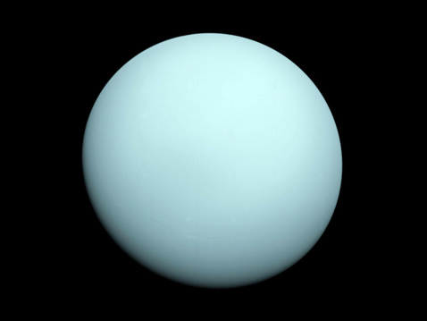
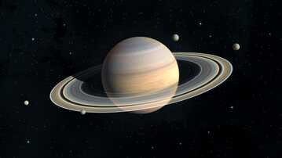
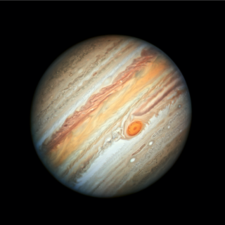
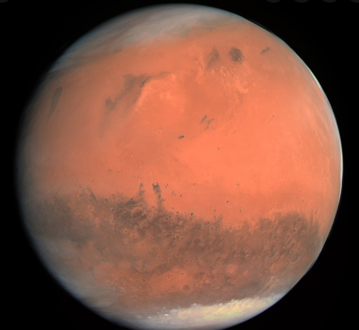
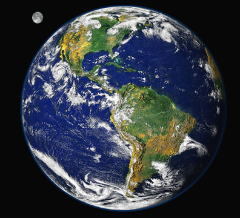
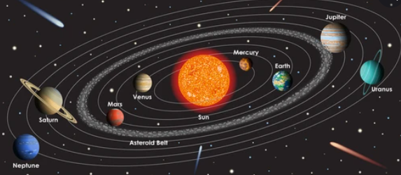

Saturn is a gas giant made up mostly of hydrogen and helium. Saturn's volume is greater than 760 Earths, and it is the second most massive planet in the solar system, about 95 times Earth's mass. The Ringed Planet is the least dense of all the planets, and is the only one less dense than water.




Jupiter is the fifth planet from our Sun and is, by far, the largest planet in the solar system – more than twice as massive as all the other planets combined. Jupiter's stripes and swirls are actually cold, windy clouds of ammonia and water, floating in an atmosphere of hydrogen and helium. Jupiter’s iconic Great Red Spot is a giant storm bigger than Earth that has raged for hundreds of years. Jupiter is surrounded by dozens of moons. Jupiter also has several rings, but unlike the famous rings of Saturn, Jupiter’s rings are very faint and made of dust, not ice.
Planets
Mars is sometimes called the Red Planet. It's red because of rusty iron in the ground. Like Earth, Mars has seasons, polar ice caps, volcanoes, canyons, and weather. It has a very thin atmosphere made of carbon dioxide, nitrogen, and argon. There are signs of ancient floods on Mars, but now water mostly exists in icy dirt and thin clouds. On some Martian hillsides, there is evidence of liquid salty water in the ground.
Earth, our home planet, is a world unlike any other. The third planet from the sun, Earth is the only place in the known universe confirmed to host life. With a radius of 3,959 miles, Earth is the fifth largest planet in our solar system, and it's the only one known for sure to have liquid water on its surface. Earth is the only planet known to maintain life. Find out the origins of our home planet and some of the key ingredients that help make this blue speck in space a unique global ecosystem.
Mercury is the smallest planet in our solar system. Along with Venus, Earth, and Mars, Mercury is one of the rocky planets. It has a solid surface that is covered with craters. It has no atmosphere, and it doesn't have any moons. Mercury is the smallest planet in our solar system. It’s just a little bigger than Earth’s moon. It is the closest planet to the sun, but it’s actually not the hottest. Venus is hotter.
Mercury, Venus, Earth, Mars, Jupiter, Saturn, Uranus, Neptune. A planet is any of the large bodies that orbit the Sun, including Mercury, Venus, Earth, Mars, Jupiter, Saturn, Uranus, and Neptune, in order of closeness to the Sun.

 (1).jpg)